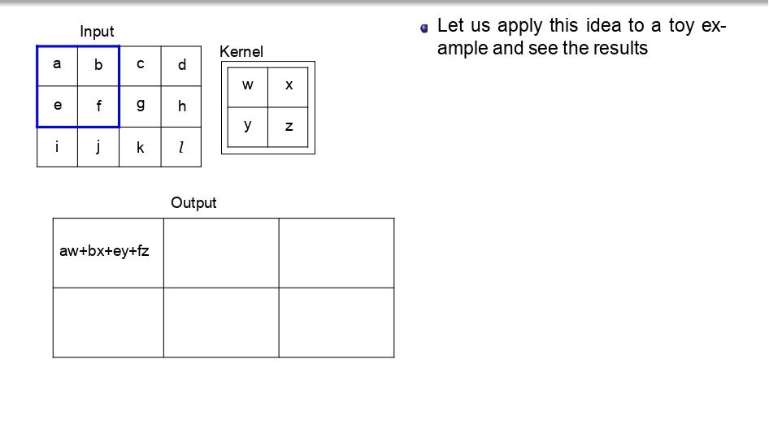
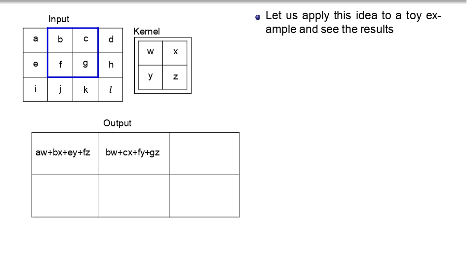
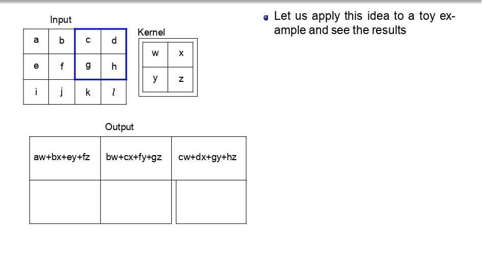
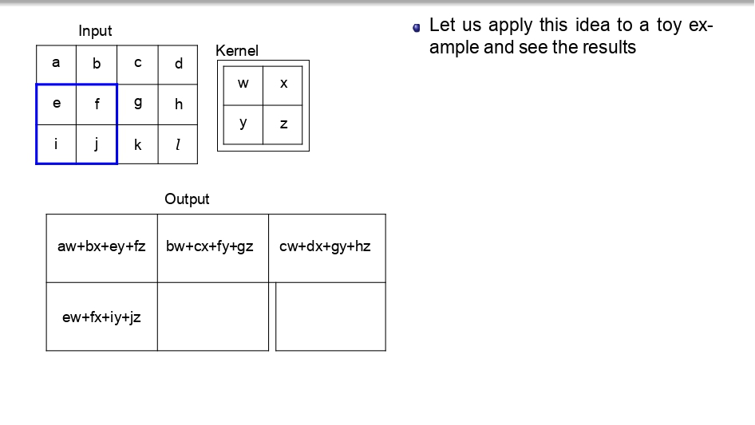
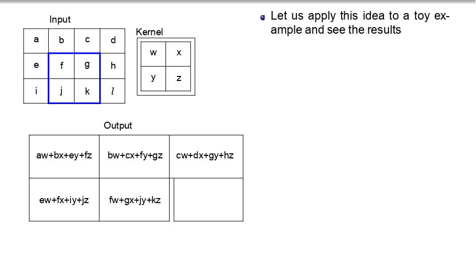
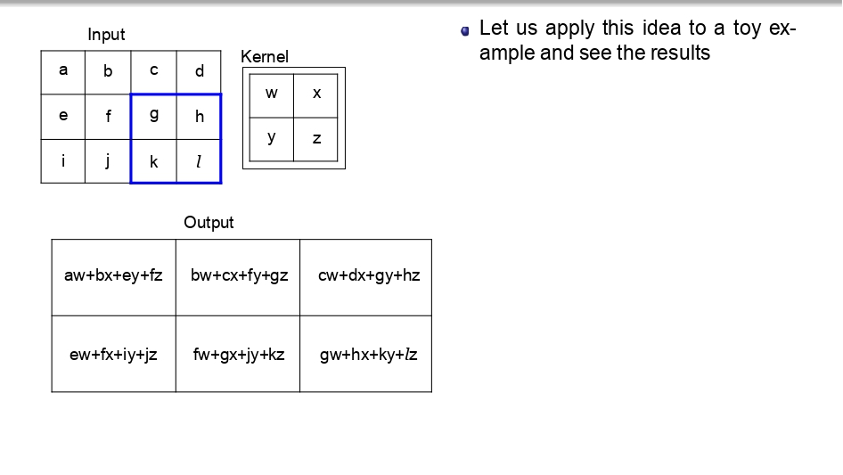
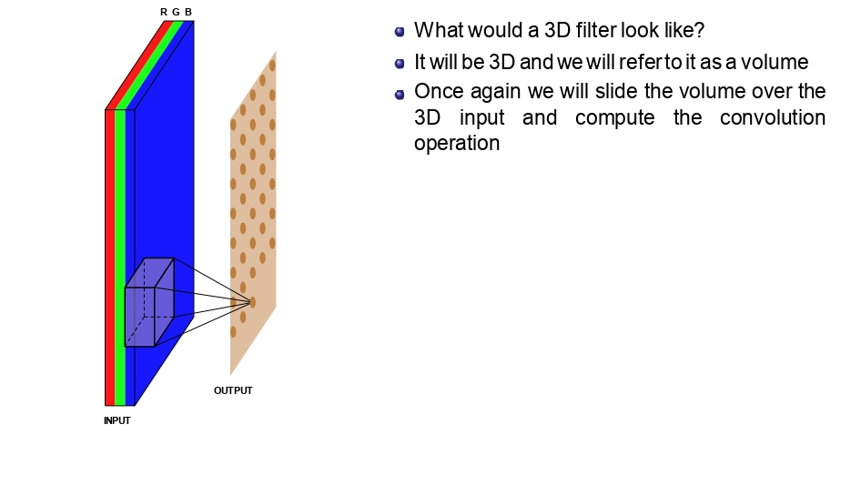
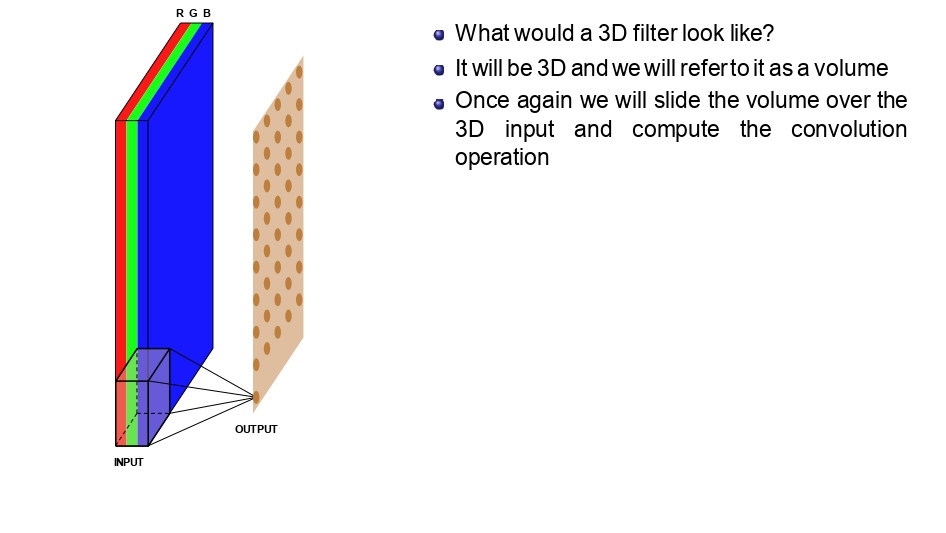
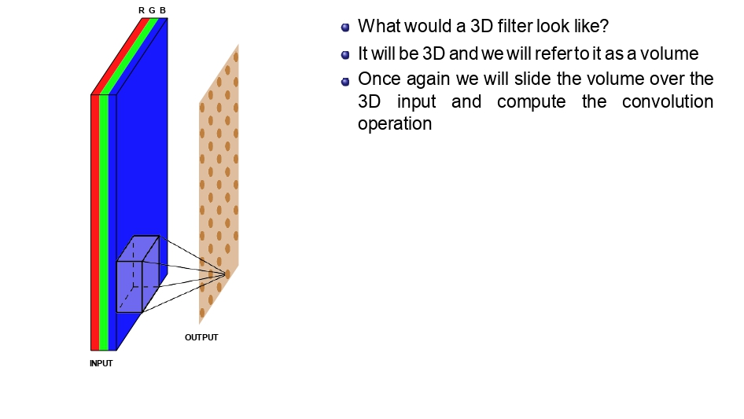
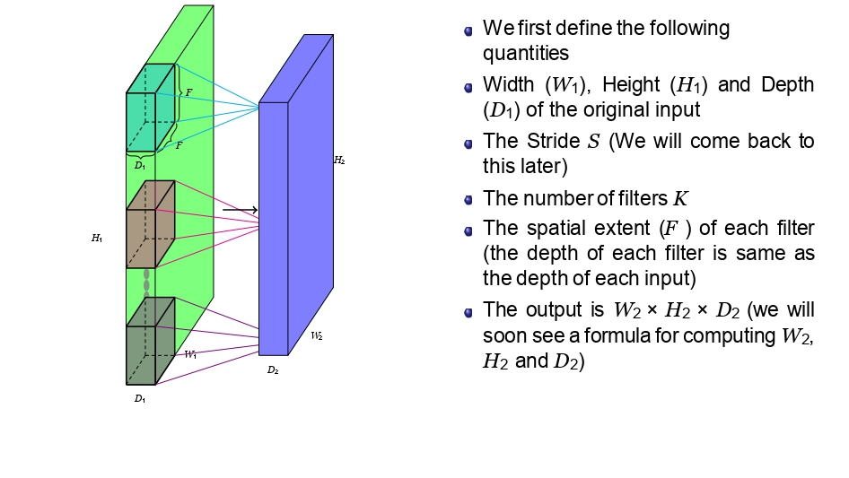

🎬 القصة: كيف الكمبيوتر "بفرز" اللي شايفه؟
تخيل إنك واقف قدام لوحة فنية ضخمة، وبدك تطلع منها بس "الخطوط العريضة". مش رح تقدر تشوف كل التفاصيل
مرة وحدة، رح تضطر تمشي "عدسة مكبرة" على كل شبر باللوحة وتركز..
هاض بالظبط هو الـ Convolution. هو الفلتر اللي بمشي على الصورة "بكسل بكسل"،
وبقرر هاض الجزء مهم ولا لأ. بدون هالعملية، الكمبيوتر بظل شايف الصورة "عجقة" أرقام، بس مع الـ Convolution، ببلش يفهم وين الحواف، وين الزوايا، وكيف بميز وجهك عن رغيف
الخبز!
🎬 عرض بصري: كيف تتحرك العدسة؟
Slides 07-12






👈 اسحب لليسار لتشوف خطوات
التحرك (Step-by-Step) 👉
بدل ما نضيع وقتنا، شوفوا كيف الـ Kernel بمشي بكسل بكسل:
- بالبداية بضرب (aw+bx+ey+fz) عشان يطلع أول بكسل في الناتج.
- بعدين "بزحلق" خطوة لليحمين وبكرر نفس العملية.
- بخلص الصف الأول، وبنزل للصف اللي تحته.. وهكذا لحد ما يخلص الصورة كاملة.
الخلاصة: كل قيمة في الـ Output هي
نتيجة "تفاعل" الفلتر مع منطقة معينة في الصورة الأصلية.
3D Convolution in Action
Slides 60-66



👈 المكعب بيمسح
الطبقات كلها في كل وقفة 👉
المكعب بيعمل Sliding يمين وتحت، بس ما بمشي
للداخل (العمق). هو أصلاً بغطي كل الطبقات RGB مرة وحدة.
كل ما يوقف في مكان، بضرب كل أرقامه في أرقام الصورة اللي تحته وبجمعهم، والنتيجة بتطلع لنا رقم واحد بس.
قاموس الـ Convolution: المصطلحات الأساسية
Slides 70-79

عشان نصير "مهندسين" رؤية حاسوبية صح، لازم نعرف نسمي الأشياء بمسمياتها. هاي هي الكميات اللي رح
نستخدمها في كل المعادلات الجاية:
1. أبعاد المدخلات (Input)
- 🏷️ \(W_1\): العرض
(Width)
- 🏷️ \(H_1\):
الارتفاع (Height)
- 🏷️ \(D_1\): العمق
(Depth)
- 🚀 \(S\): مقدار
القفزة (Stride)
2. أبعاد الفلتر (Filter)
- 🏷️ \(K\): عدد
الفلاتر المستخدمة
- 📐 \(F\): مساحة
الفلتر المكانية (Spatial Extent)
-
💡 تذكير: عمق الفلتر دايماً بساوي عمق المدخلات (\(D_1\)).
3. أبعاد المخرجات (Output)
- 📦 \(W_2\): عرض
المخرجات
- 📦 \(H_2\): ارتفاع
المخرجات
- 📦 \(D_2\): عمق
المخرجات (ويساوي \(K\))
سؤال: ليش عمق المخرجات (\(D_2\)) بساوي عدد الفلاتر (\(K\))؟
الجواب: لأن كل فلتر بيعمل "مسحة" كاملة وبطلع لنا صفحة وحدة بس!